NIST SP 800-202 日本語訳
英語タイトル : Quick Start Guide for Populating Mobile Test Devices日本語タイトル : モバイルテストデバイスへのデータ投入クイックスタートガイド
公開日 : 2018-05-10
原文URL : https://csrc.nist.gov/pubs/sp/800/202/final
翻訳編集 : 自動生成
[要約] SP 800-202 は、モバイルデバイスの内容に典型的に見られるデータ要素を記録して投入し、内蔵メモリをテスト用に準備するための手順と考慮事項を示すクイックスタートガイドです。モバイルフォレンジックツールのテストの一環として、デバイスへのデータ投入の方法と、効果的なテストのために含めるべきデータ要素の選び方を説明します。Federated Testingでの使用を想定して作成されましたが、他のテスト手法で使うデバイスへのデータ投入にも利用できます。
有志による非公式の日本語訳です。NIST および米国商務省が作成・承認・推奨したものではありません。要件の確認にはNIST の正式版 PDFを参照してください。
NIST Special Publication 800-202
NIST Special Publication 800-202
Quick Start Guide for Populating
クイックスタートガイド：データ投入
Mobile Test Devices
モバイルテストデバイス
Rick Ayers
Rick Ayers
Benjamin Livelsberger
Barbara Guttman
Benjamin Livelsberger
Barbara Guttman
This publication is available free of charge from: https://doi.org/10.6028/NIST.SP.800-202
本出版物は、以下より無料で入手可能である: https://doi.org/10.6028/NIST.SP.800-202
C O M P U T E R S E C U R I T Y
C O M P U T E R S E C U R I T Y
［NIST のロゴ。公的な標章のため、この非公式サイトには掲載していない。原本 PDF を参照。］
NIST Special Publication 800-202
NIST Special Publication 800-202
Quick Start Guide for Populating
クイックスタートガイド：データ投入
Mobile Test Devices
モバイルテストデバイス
Rick Ayers
Rick Ayers
Benjamin Livelsberger
Barbara Guttman
Software and Systems Division
Benjamin Livelsberger
Barbara Guttman
ソフトウェア・システム部門
Information Technology Laboratory
情報技術研究所
This publication is available free of charge from: https://doi.org/10.6028/NIST.SP.800-202
本出版物は、以下より無料で入手可能である: https://doi.org/10.6028/NIST.SP.800-202
May 2018
2018年5月
［米国商務省の紋章。公的な標章のため、この非公式サイトには掲載していない。原本 PDF を参照。］
U.S. Department of Commerce Wilbur L. Ross, Jr., Secretary
米国商務省 ウィルバー・L・ロス・ジュニア長官
National Institute of Standards and Technology
米国国立標準技術研究所
Walter Copan, NIST Director and Under Secretary of Commerce for Standards and Technology
Walter Copan、NIST長官兼商務次官（標準・技術担当）
Authority
権限
This publication has been developed by NIST in accordance with its statutory responsibilities under the Federal Information Security Modernization Act (FISMA) of 2014, 44 U.S.C. § 3551 et seq., Public Law (P.L.) 113-283. NIST is responsible for developing information security standards and guidelines, including minimum requirements for federal information systems, but such standards and guidelines shall not apply to national security systems without the express approval of appropriate federal officials exercising policy authority over such systems. This guideline is consistent with the requirements of the Office of Management and Budget (OMB) Circular A-130.
本出版物は、2014年連邦情報セキュリティ近代化法（FISMA）、合衆国法典第44編第3551条以下、公法（P.L.）113-283に基づく法定責任に従ってNISTにより作成された。NISTは、連邦情報システムの最小限の要件を含む情報セキュリティ基準およびガイドラインの開発を担当しているが、そのような基準およびガイドラインは、当該システムに対して政策権限を行使する適切な連邦政府職員の明示的な承認なしに国家安全保障システムに適用されてはならない。本ガイドラインは、行政管理予算局（OMB）回報A-130の要件と一致している。
Nothing in this publication should be taken to contradict the standards and guidelines made mandatory and binding on federal agencies by the Secretary of Commerce under statutory authority. Nor should these guidelines be interpreted as altering or superseding the existing authorities of the Secretary of Commerce, Director of the OMB, or any other federal official. This publication may be used by nongovernmental organizations on a voluntary basis and is not subject to copyright in the United States. Attribution would, however, be appreciated by NIST.
本出版物のいかなる内容も、法定の権限に基づき商務長官によって連邦機関に対して義務的かつ拘束力を持つとされた基準およびガイドラインに矛盾するものと受け止められるべきではない。また、これらのガイドラインは、商務長官、OMB長官、またはその他の連邦政府職員の既存の権限を変更する、またはそれに取って代わるものと解釈されるべきではない。本出版物は、非政府組織が自発的に使用することができ、米国内では著作権の対象外である。ただし、NISTへの帰属表示（クレジット表記）を行っていただければ幸いである。
National Institute of Standards and Technology Special Publication 800-202 Natl. Inst. Stand. Technol. Spec. Publ. 800-202, 29 pages (May 2018) CODEN: NSPUE2
米国国立標準技術研究所 特別刊行物 800-202 Natl. Inst. Stand. Technol. Spec. Publ. 800-202, 29 pages (May 2018) CODEN: NSPUE2
This publication is available free of charge from: https://doi.org/10.6028/NIST.SP.800-202
本出版物は以下から無料で入手可能である：https://doi.org/10.6028/NIST.SP.800-202
Certain commercial entities, equipment, or materials may be identified in this document in order to describe an experimental procedure or concept adequately. Such identification is not intended to imply recommendation or endorsement by NIST, nor is it intended to imply that the entities, materials, or equipment are necessarily the best available for the purpose. There may be references in this publication to other publications currently under development by NIST in accordance with its assigned statutory responsibilities. The information in this publication, including concepts and methodologies, may be used by federal agencies even before the completion of such companion publications. Thus, until each publication is completed, current requirements, guidelines, and procedures, where they exist, remain operative. For planning and transition purposes, federal agencies may wish to closely follow the development of these new publications by NIST. Organizations are encouraged to review all draft publications during public comment periods and provide feedback to NIST. Many NIST cybersecurity publications, other than the ones noted above, are available at https://csrc.nist.gov/publications.
原本PDFの抜粋画像
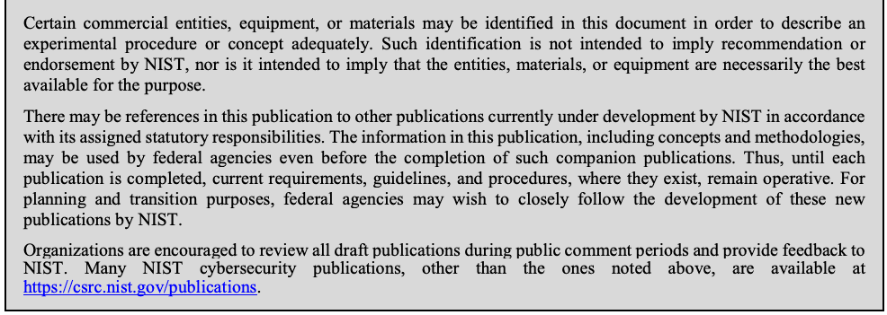
実験手順または概念を適切に説明するために、本ドキュメントにおいて特定の営利団体、機器、または材料が特定される場合がある。このような特定は、NISTによる推奨または支持を意味することを意図したものではなく、またそれらの団体、材料、または機器が必ずしもその目的に利用可能な最善のものであることを意味することを意図したものでもない。本出版物には、割り当てられた法定責任に従ってNISTが現在開発中の他の出版物への言及が含まれている場合がある。本出版物に含まれる情報（概念および方法論を含む）は、そのような付随出版物の完成前であっても連邦機関が使用することができる。したがって、各出版物が完成するまでは、現行の要件、ガイドライン、および手順が存在する場合、それらは有効なままである。計画および移行の目的で、連邦機関はNISTによるこれらの新しい出版物の開発を綿密にフォローすることを希望する場合がある。組織は、パブリックコメント期間中にすべてのドラフト出版物をレビューし、NISTにフィードバックを提供することが推奨される。上記の出版物以外の多くのNISTサイバーセキュリティ出版物は、https://csrc.nist.gov/publications で入手可能である。
Comments on this publication may be submitted to: National Institute of Standards and Technology Attn: Software and Systems Division, Information Technology Laboratory 100 Bureau Drive (Mail Stop 8970) Gaithersburg, MD 20899-8970 Email: sp800-202-comments@nist.gov
本出版物へのコメントは以下に提出することができる：National Institute of Standards and Technology Attn: Software and Systems Division, Information Technology Laboratory 100 Bureau Drive (Mail Stop 8970) Gaithersburg, MD 20899-8970 Email: sp800-202-comments@nist.gov
All comments are subject to release under the Freedom of Information Act (FOIA).
すべてのコメントは、情報自由法（FOIA）に基づき公開の対象となる。
Reports on Computer Systems Technology
コンピュータシステム技術に関する報告書
The Information Technology Laboratory (ITL) at the National Institute of Standards and Technology (NIST) promotes the U.S. economy and public welfare by providing technical leadership for the Nation’s measurement and standards infrastructure. ITL develops tests, test methods, reference data, proof of concept implementations, and technical analyses to advance the development and productive use of information technology. ITL’s responsibilities include the development of management, administrative, technical, and physical standards and guidelines for the cost-effective security and privacy of other than national security-related information in federal information systems. The Special Publication 800-series reports on ITL’s research, guidelines, and outreach efforts in information system security, and its collaborative activities with industry, government, and academic organizations.
米国国立標準技術研究所（NIST）の情報技術研究所（ITL）は、米国の測定および標準インフラストラクチャに対する技術的リーダーシップを提供することにより、米国経済と公共の福祉を促進している。ITLは、情報技術の開発と生産的な利用を促進するため、試験、試験方法、参照データ、概念実証の実装、および技術分析を開発している。ITLの責務には、連邦情報システムにおける国家安全保障関連以外の情報の費用対効果の高いセキュリティとプライバシーのための、管理上、運営上、技術上、および物理上の標準とガイドラインの開発が含まれる。Special Publication 800シリーズは、情報システムセキュリティにおけるITLの研究、ガイドライン、アウトリーチ活動、ならびに産業界、政府、学術組織との協調活動について報告している。
Abstract
概要
This guide provides procedures for documenting and populating various data elements typically found within the contents of a mobile device, e.g., mobile phone, tablet, etc. The guide discusses techniques and considerations for preparing the internal memory of a mobile device for use in testing a mobile forensic tool.
本ガイドは、モバイルデバイス（例：携帯電話、タブレットなど）のコンテンツ内に典型的に見られる様々なデータ要素を文書化し、投入するための手順を提供する。本ガイドは、モバイルフォレンジックツールのテストで使用するためにモバイルデバイスの内蔵メモリを準備するための技法と考慮事項について論じる。
Keywords
キーワード
Computer Forensic Tool Testing; Digital Forensics; Federated Testing; Mobile Forensics
コンピュータフォレンジックツールテスト、デジタルフォレンジクス、連合テスト、モバイルフォレンジクス
Acknowledgments
謝辞
The authors, Rick Ayers, Benjamin Livelsberger and Barbara Guttman from NIST wish to thank colleagues who reviewed drafts of this document. In particular, our appreciation goes to Craig Russell and Jenise Reyes from NIST for their technical support and written contributions to this document. Our appreciation also goes out to Sam Brothers from The MITRE Corporation and Daren Melson for their assistance on technical issues that arose in our work. The authors would also like to thank all others who assisted with our review process.
著者であるNISTのRick Ayers、Benjamin Livelsberger、Barbara Guttmanは、本書のドラフトをレビューした同僚に感謝する。特に、技術的支援および本書への執筆面での貢献について、NISTのCraig RussellとJenise Reyesに感謝する。また、作業中に生じた技術的課題への支援について、The MITRE CorporationのSam Brothers、およびDaren Melsonにも感謝する。著者はさらに、レビュープロセスを支援したその他すべての人々にも感謝する。
Audience
対象読者
The intended audience ranges from law enforcement to forensic practitioners and examiners testing and utilizing digital forensic tools often used in incident response and criminal investigations.
想定される対象読者は、法執行機関から、インシデント対応や犯罪捜査で頻繁に使用されるデジタルフォレンジックツールのテストや活用を行うフォレンジック実務者および検査官までに及ぶ。
Table of Contents
目次
1 Introduction — 1
1 はじめに — 1
1.1 Document Scope and Purpose — 1
1.1 本書の範囲と目的 — 1
1.2 Document Organization — 1
1.2 本書の構成 — 1
2 Document Device Data — 3
2 デバイスデータの記録 — 3
3 Personal Information Management (PIM) Data: Contacts, Calendar & Memos 3
3 個人情報管理（PIM）データ：連絡先、カレンダー、メモ 3
4 Stand-alone Data Files — 3
4 スタンドアロンデータファイル — 3
5 Call Logs — 4
5 通話履歴 — 4
6 Text Messages — 4
6 テキストメッセージ — 4
7 MMS Messages — 5
7 MMSメッセージ — 5
8 Location Data — 5
8 位置情報データ — 5
9 Browser/Email Data — 5
9 ブラウザ／電子メールデータ — 5
10 Social Media Data — 6
10 ソーシャルメディアデータ — 6
11 Other Applications of Interest — 6
11 その他の注目すべきアプリケーション — 6
12 SIM/UICC Card — 6
12 SIM/UICCカード — 6
List of Appendices
付録一覧
Appendix A— Acronyms — 8
付録A— 頭字語 — 8
Appendix B— Mobile Device Data Documentaion — 10
付録B— モバイルデバイスデータの文書化 — 10
Appendix C— Mobile Device Data Example — 16
付録C— モバイルデバイスデータの例 — 16
List of Tables
表一覧
Table 1: Equipment and Subscriber-related data — 10
表1: 機器および加入者関連データ — 10
Table 2: PIM data — 10
表2：PIMデータ — 10
Table 3: Stand-alone data files — 11
表3：スタンドアロンデータファイル — 11
Table 4: Call Log data — 12
表4：通話履歴データ — 12
Table 5: Text Messages — 12
表5：テキストメッセージ — 12
Table 6: Multi-media Messages — 13
表6：マルチメディアメッセージ — 13
Table 7: Location data — 13
表7：位置情報データ — 13
Table 8: Browser/email data — 14
表8：ブラウザ／電子メールデータ — 14
Table 9: Social Media related data — 14
表9：ソーシャルメディア関連データ — 14
Table 10: Other applications of interest — 15
表 10: その他の注目すべきアプリケーション — 15
Table 11: SIM/UICC data — 15
表 11: SIM/UICCデータ — 15
Table 12: PIM data example — 16
表 12: PIMデータの例 — 16
Table 13: Stand-alone data files example — 17
表 13: スタンドアロンデータファイルの例 — 17
Table 14: Call Log data example — 17
表 14: 通話履歴データの例 — 17
Table 15: Text Messages example — 18
表 15: テキストメッセージの例 — 18
Table 16: Multi-media Messages example — 19
表 16: マルチメディアメッセージの例 — 19
Table 17: Location Data example — 20
表 17: 位置情報データの例 — 20
Table 18: Browser/email data example — 20
表 18: ブラウザ／電子メールデータの例 — 20
Table 19: Social Media related data example — 20
表 19: ソーシャルメディア関連データの例 — 20
Table 20: Other applications of interest example — 21
表 20: その他の注目すべきアプリケーションの例 — 21
Table 21: SIM/UICC data example — 21
表 21: SIM/UICCデータの例 — 21
1 Introduction
1 はじめに
1.1 Document Scope and Purpose
1.1 文書の範囲と目的
This guide describes how to populate a mobile device as part of testing a mobile forensic tool. It was built to be used with Federated Testing, but can also be used to populate a device for use with other test approaches. The Federated Testing project1 is an expansion of the Computer Forensics Tool Testing (CFTT) Program at NIST which provides digital forensics investigators and labs with test materials for forensic tool testing. The goal of Federated Testing is to help digital forensics investigators to test the tools that they use in their labs and to enable sharing of tool test results within the digital forensics community. The goals of this guide are twofold: 1) provide guidance for how to populate (place test data on) a moble device for use in forensic tool testing and 2) provide guidance to select data elements for inclusion that ensure effective testing.
本ガイドは、モバイルフォレンジックツールのテストの一環として、モバイルデバイスにデータを投入（ポピュレート）する方法について説明する。Federated Testingとともに使用するために作成されたが、他のテスト手法で使用するデバイスにデータを投入するために使用することもできる。Federated Testingプロジェクト1は、NISTのコンピュータフォレンジックツールテスト（CFTT）プログラムを拡張したものであり、デジタルフォレンジック捜査官や試験所にフォレンジックツールのテスト用資料を提供している。Federated Testingの目標は、デジタルフォレンジック捜査官が試験所で使用するツールをテストできるように支援し、デジタルフォレンジックコミュニティ内でのツールテスト結果の共有を可能にすることである。本ガイドの目標は、1) フォレンジックツールのテストで使用するためにモバイルデバイスにデータを投入（テストデータを配置）する方法のガイダンスを提供すること、および 2) 効果的なテストを確実にするための含めるべきデータ要素を選択するためのガイダンスを提供すること、の2点である。
There are two strategies for populating mobile test devices, e.g., mobile phones, tablets, etc.: 1) populate a new or previously sanitized device or 2) start with a used device and add content as needed. This guide first describes the major data types and how to populate them onto the test device. Appendix B is both a template that should be filled out for each device to document the device’s content prior to testing and a specification of properties that each data element should meet. This “ground truth” provides the “expected results” for checking the ability of the tool being tested to obtain all of the device’s contents. Appendix C is a sample of a template filled out with appropriate data elements.
携帯電話やタブレットなどのモバイルテストデバイスにデータを投入するには、1) 新規または以前にサニタイズされたデバイスにデータを投入する、あるいは 2) 使用済みデバイスから開始し、必要に応じてコンテンツを追加する、という2つの戦略がある。本ガイドではまず、主要なデータ型と、それらをテストデバイスに投入する方法について説明する。付録Bは、テスト前にデバイスのコンテンツを記録するためにデバイスごとに記入すべきテンプレートであると同時に、各データ要素が満たすべきプロパティの仕様でもある。この「グラウンドトゥルース」は、テスト対象のツールがデバイスのすべてのコンテンツを取得する能力をチェックするための「期待される結果」を提供する。付録Cは、適切なデータ要素が記入されたテンプレートのサンプルである。
This guide will step you through populating and documenting your test devices. This needs to be done for each mobile device. You should select data types that are relevant to the cases seen in your lab. You do not need to include all of the data types. You can include other relevant data types by adding a section to Appendix B.
本ガイドでは、テストデバイスへのデータの投入と記録の手順を順を追って説明する。これはモバイルデバイスごとに行う必要がある。自身の試験所で扱う事件に関連するデータ型を選択すべきである。すべてのデータ型を含める必要はない。付録Bにセクションを追加することで、他の関連するデータ型を含めることができる。
Used devices may include numerous data elements (e.g., contact entries, call logs, text messages, pictures, etc.). While a device may contain hundreds of a specific data type (e.g., contact entries), users should concentrate on documenting a representative portion of data elements with the required data properties relevant to testing within Appendix B. You only need to populate data where the data element does not already exist.
使用済みデバイスには、多数のデータ要素（例：連絡先エントリ、通話履歴、テキストメッセージ、写真など）が含まれている場合がある。デバイスには特定のデータ型（例：連絡先エントリ）が数百件含まれていることもあるが、ユーザーは、テストに関連する必要なデータプロパティを備えたデータ要素のうち代表的な一部を付録Bに記録することに専念すべきである。データを投入する必要があるのは、該当するデータ要素がまだ存在しない場合のみである。
1.2 Document Organization
1.2 文書の構成
The guide is divided into the following sections and appendices describing how to document/populate data for a mobile device and a SIM/UICC:
▪ Section 2: Document Device Data
▪ Section 3: Personal Information Management (PIM) Data: Contacts, Calendar & Memos
▪ Section 4: Stand-alone Data Files
▪ Section 5: Call Logs
▪ Section 6: Text Messages
本ガイドは、モバイルデバイスおよびSIM/UICCのデータを記録／投入する方法を説明する以下のセクションおよび付録に分かれている：
▪ セクション2：デバイスデータの記録
▪ セクション3：個人情報管理（PIM）データ：連絡先、カレンダー、メモ
▪ セクション4：スタンドアロンデータファイル
▪ セクション5：通話履歴
▪ セクション6：テキストメッセージ
▪ Section 7: MMS Messages
▪ Section 8: Location Data
▪ Section 9: Browser/Email Data
▪ Section 10: Social Media Data
▪ Section 11: Other Applications of Interest
▪ Section 12: SIM/UICC Card
▪ Appendix A: Acronyms
▪ Appendix B: Mobile Device Data Documentation - provides users with guidance on specific data properties for each data element type and a blank template to be used to document target mobile devices and/or SIM/UICC data.
▪ Appendix C: Mobile Device Data Example - offers example data values that may be used to populate a target mobile device and/or SIM/UICC.
▪ セクション7：MMSメッセージ
▪ セクション8：位置情報データ
▪ セクション9：ブラウザ／電子メールデータ
▪ セクション10：ソーシャルメディアデータ
▪ セクション11：その他の注目すべきアプリケーション
▪ セクション12：SIM/UICCカード
▪ 付録A：頭字語
▪ 付録B：モバイルデバイスデータの記録 - 各データ要素型の特定のデータプロパティに関するガイダンス、およびターゲットのモバイルデバイスおよび／またはSIM/UICCのデータを記録するために使用する空白のテンプレートをユーザーに提供する。
▪ 付録C：モバイルデバイスデータの例 - ターゲットのモバイルデバイスおよび／またはSIM/UICCにデータを投入するために使用できるデータ値の例を提供する。
NOTE: The status of data populated onto a mobile device and/or a SIM/UICC may either be classified as Active or Deleted. Deleted data objects may be recovered by a mobile forensic tool if they are not overwritten. To prevent overwriting of data objects that are intended to be recovered, do NOT delete data objects populated onto a mobile device and/or SIM/UICC until data population has been completed.
注記：モバイルデバイスおよび／またはSIM/UICCに投入されたデータのステータスは、アクティブ（Active）または削除済み（Deleted）のいずれかに分類され得る。削除されたデータオブジェクトは、上書きされていなければ、モバイルフォレンジックツールによって復元される可能性がある。復元させることを意図したデータオブジェクトが上書きされるのを防ぐため、データの投入が完了するまでは、モバイルデバイスおよび／またはSIM/UICCに投入されたデータオブジェクトを削除してはならない。
For a more in-depth view on data population refer to CFTT’s Mobile Device Data Population Setup Guide2.
データの投入に関するより詳細な説明については、CFTTの「Mobile Device Data Population Setup Guide」2を参照のこと。
2 Document Device Data
2 デバイスデータの記録
Document the equipment (i.e., IMEI) and subscriber (i.e., MSISDN/phone number) data by navigating to the mobile device Settings menu. The Settings menu is often identified by a gear shaped icon. Equipment and subscriber data may be in a subfolder such as General or About Phone.
モバイルデバイスの「設定」メニューに移動して、機器データ（すなわちIMEI）および加入者データ（すなわちMSISDN／電話番号）を記録する。「設定」メニューは、多くの場合、歯車型のアイコンで識別される。機器データおよび加入者データは、「一般」や「端末情報」などのサブフォルダー内にある場合がある。
Note: For mobile devices that allow for easy battery removal - the IMEI is also commonly located on a sticker within the battery cavity beneath the battery. For some makes/models of mobile devices the IMEI can be retrieved by entering: *#06# on the keypad.
注：バッテリーを容易に取り外すことができるモバイルデバイスの場合、IMEIは一般に、バッテリー下のバッテリー収納部内のステッカーにも記載されている。一部のメーカー／モデルのモバイルデバイスでは、キーパッドで「*#06#」を入力することでIMEIを取得できる。
Document Device Data in Appendix B.
デバイスデータを付録Bに記録する。
3 Personal Information Management (PIM) Data: Contacts, Calendar & Memos
3 個人情報管理（PIM）データ：連絡先、カレンダー、メモ
Populating PIM data onto a mobile device does not require an active cellular subscription. Although, if network connectivity can be established, synchronization of supported data elements with an email account speeds up this process.
モバイルデバイスへのPIMデータの投入には、アクティブな携帯電話回線の契約は不要である。ただし、ネットワーク接続を確立できる場合は、サポートされているデータ要素を電子メールアカウントと同期することで、このプロセスを迅速化できる。
Different methods exist for data population, such as manual input or synchronization with an email account.
データ投入には、手動入力や電子メールアカウントとの同期など、さまざまな方法が存在する。
Synchronizing data from an existing email account to a mobile device requires network connectivity. Support for this method will vary based on make/model of the device.
既存の電子メールアカウントからモバイルデバイスへデータを同期するには、ネットワーク接続が必要である。この方法がサポートされるかどうかは、デバイスのメーカー／モデルによって異なる。
Note: Synchronization of Contacts, Calendar and Memos with an existing email account may be accomplished by enabling specific data types within the mobile devices email client settings. Once this data is enabled, and the email account is accessed from the mobile device, the sync process should occur. It is recommended to set up a unique email account designed specifically for data synchronization.
注：連絡先、カレンダー、およびメモを既存の電子メールアカウントと同期するには、モバイルデバイスの電子メールクライアントの設定で特定のデータ型を有効にすればよい。このデータが有効化され、モバイルデバイスから電子メールアカウントにアクセスすると、同期プロセスが行われるはずである。データ同期専用に用意した固有の電子メールアカウントを設定することが推奨される。
Note: Non-Latin text (Non-English, e.g., Chinese, Arabic, Russian, etc.) can be readily created with language translation tools from a web-browser and then copied and pasted.
注：非ラテン文字のテキスト（英語以外。例：中国語、アラビア語、ロシア語など）は、Webブラウザから言語翻訳ツールを使って容易に作成し、コピー＆ペーストすることができる。
Document the PIM data in Appendix B.
PIMデータを付録Bに記録する。
4 Stand-alone Data Files
4 スタンドアロンデータファイル
Stand-alone data files (e.g., audio, graphic, video) can be populated onto a mobile device using its native applications (i.e., camera, microphone).
スタンドアロンデータファイル（例：音声、画像、動画）は、モバイルデバイスのネイティブアプリケーション（すなわちカメラ、マイク）を使用して、そのデバイスに投入することができる。
Note: If the mobile device has network connectivity, stand-alone files (audio, graphic, video, documents, etc.) may be populated onto the target mobile device by downloading them from an email account.
注：モバイルデバイスにネットワーク接続がある場合、スタンドアロンファイル（音声、画像、動画、文書など）は、電子メールアカウントからダウンロードすることでターゲットのモバイルデバイスに投入してもよい。
Document Stand-alone Data Files in Appendix B.
スタンドアロンデータファイルを付録Bに記録する。
5 Call Logs
5 通話履歴
When populating mobile devices with call log data, it is useful to obtain two devices. A sending device, and a target device. Missed calls are populated onto the target device by placing a call from a sending device and not answering from the target device. Incoming calls are populated by answering the call from the target device and documenting the date/time and the duration of the call. Outgoing calls are placed from the target device to secondary lines.
モバイルデバイスに通話履歴データを投入する際は、2台のデバイスを用意すると有用である。すなわち、送信側デバイスとターゲットデバイスである。不在着信は、送信側デバイスから電話をかけ、ターゲットデバイス側で応答しないことによって、ターゲットデバイスに投入される。着信通話は、ターゲットデバイス側でその電話に応答し、日時および通話時間を記録することによって投入される。発信通話は、ターゲットデバイスから別の回線へ発信する。
Document Call Logs in Appendix B.
通話履歴を付録Bに記録する。
6 Text Messages
6 テキストメッセージ
Populating mobile devices with text messages requires two mobile devices. A sending device, and a target device. Text messages may be categorized as either Short Messages Service (SMS) or Enhanced Message Service (EMS) messages.
モバイルデバイスにテキストメッセージを投入するには、2台のモバイルデバイスが必要である。すなわち、送信側デバイスとターゲットデバイスである。テキストメッセージは、Short Messages Service（SMS）メッセージまたはEnhanced Message Service（EMS）メッセージのいずれかに分類され得る。
SMS messages are solely textual based messages containing less than 160 characters. EMS messages are an extension of SMS and support text messages of 160 or more characters.
SMSメッセージは、160文字未満の、テキストのみからなるメッセージである。EMSメッセージはSMSを拡張したものであり、160文字以上のテキストメッセージをサポートする。
Incoming messages are populated onto the target device by sending the message from a sending device. Outgoing messages are populated by sending a message from the target device to a secondary device.
受信メッセージは、送信側デバイスからメッセージを送信することによって、ターゲットデバイスに投入される。送信メッセージは、ターゲットデバイスからセカンダリデバイスへメッセージを送信することによって投入される。
In addition to the text message, document phone numbers, date/time, and the status (i.e., read, unread, deleted).
テキストメッセージに加えて、電話番号、日時、およびステータス（すなわち既読、未読、削除済み）を記録する。
Note: Text messages are categorized with a status of either: Read, Unread, or Deleted. To establish messages with a status of read, open and observe the message on the screen. Messages with a status of Unread are accomplished by not reading/opening the message. Messages with a status of Deleted are accomplished by deleting a specific message after the phone has been entirely populated.
注：テキストメッセージは、既読（Read）、未読（Unread）、または削除済み（Deleted）のいずれかのステータスに分類される。ステータスが既読のメッセージを作るには、そのメッセージを開いて画面上で確認する。ステータスが未読のメッセージは、メッセージを読まない／開かないことによって作られる。ステータスが削除済みのメッセージは、電話機へのデータ投入がすべて完了した後に、特定のメッセージを削除することによって作られる。
Document Text Messages in Appendix B.
テキストメッセージを付録Bに記録する。
7 MMS Messages
7 MMSメッセージ
MMS messages are populated onto the target device similar to text messages as described above in Section 6. MMS messages contain either an audio, graphic or a video attachment - with or without a text message.
MMSメッセージは、上記のセクション6で説明したテキストメッセージと同様の方法で、ターゲットデバイスに投入される。MMSメッセージには、音声、画像、または動画のいずれかの添付ファイルが含まれ、テキストメッセージを伴う場合と伴わない場合がある。
Incoming MMS messages are populated onto the target device by sending MMS (audio, graphic, video) messages from a sending device. Outgoing MMS messages can be created using native applications (i.e., camera, microphone) and populated by sending a message from the target device to a secondary device. In addition to the text message, document phone numbers, date/time, and the status (i.e., read, unread, deleted).
受信MMSメッセージは、送信側デバイスからMMS（音声、画像、動画）メッセージを送信することによって、ターゲットデバイスに投入される。送信MMSメッセージは、ネイティブアプリケーション（すなわちカメラ、マイク）を使用して作成することができ、ターゲットデバイスからセカンダリデバイスへメッセージを送信することによって投入される。テキストメッセージに加えて、電話番号、日時、およびステータス（すなわち既読、未読、削除済み）を記録する。
Note: MMS messages are categorized with a status of either: Read or Unread. To establish messages with a status of read, open and observe the message on the screen. Messages with a status of Unread are accomplished by not reading/opening the message. Messages with a status of Deleted are accomplished by deleting a specific message after the phone has been entirely populated.
注：MMSメッセージは、Read（既読）またはUnread（未読）のいずれかのステータスに分類される。ステータスがReadのメッセージを作成するには、メッセージを開いて画面上で確認する。ステータスがUnreadのメッセージは、メッセージを閲覧/開封しないことによって作成される。ステータスがDeleted（削除済み）のメッセージは、電話機へのデータ投入がすべて完了した後に特定のメッセージを削除することによって作成される。
Document MMS Messages in Appendix B.
MMSメッセージを付録Bに記録する。
8 Location Data
8 位置データ
Location related data is populated onto a mobile device by enabling location services. Initiate a GPS related application from the target device, enter a destination and begin the route.
位置関連データは、位置情報サービスを有効にすることによってモバイルデバイスに投入される。対象デバイスからGPS関連アプリケーションを起動し、目的地を入力してルートを開始する。
Pictures and videos may also contain location related data. The mobile device’s camera security settings will determine if this feature is supported. For devices supporting “geotagged” pictures and video, populate the target device by taking photographs and video while documenting the location.
写真や動画にも位置関連データが含まれる場合がある。この機能がサポートされているかどうかは、モバイルデバイスのカメラのセキュリティ設定によって決まる。「ジオタグ付き」の写真および動画をサポートするデバイスでは、撮影場所を記録しながら写真および動画を撮影することによって対象デバイスにデータを投入する。
Document Location Data in Appendix B.
位置データを付録Bに記録する。
9 Browser/Email Data
9 ブラウザ／電子メールデータ
Internet related data may be populated onto mobile devices by opening a browser on the device (e.g., Chrome, Safari). The following data elements: Internet history, bookmarks are populated onto the target device by visiting and bookmarking selected URLs.
インターネット関連データは、デバイス上でブラウザ（例：Chrome、Safari）を開くことによってモバイルデバイスに投入できる。インターネット履歴、ブックマークというデータ要素は、選択したURLにアクセスし、それらをブックマークに登録することによって対象デバイスに投入される。
Email related data may be populated onto supported devices by opening an email client and sending/receiving emails to/from the device.
電子メール関連データは、電子メールクライアントを開き、デバイスとの間で電子メールを送受信することによって、対応するデバイスに投入できる。
Document Browser/Email Data in Appendix B.
ブラウザ／電子メールデータを付録Bに記録する。
10 Social Media Data
10 ソーシャルメディアデータ
Mobile devices support a variety of social media applications such as: Facebook, LinkedIn, Twitter, and Instagram.
モバイルデバイスは、Facebook、LinkedIn、Twitter、Instagramなどのさまざまなソーシャルメディアアプリケーションをサポートしている。
Individual social media accounts can be created from either a personal computer or mobile device with network connectivity. It is recommended to create two social media accounts (e.g., mobile_1, mobile_2). Creating two accounts provides the user with the ability to populate the target device with dialogue such as personal messages (PMs) between the two accounts. In addition to PMs; faux profile information (e.g., high school, college, employer, current city, hometown), picture albums, status updates, profile pictures, video, etc. should be created by accessing both accounts (for each social media app) on the target device.
個々のソーシャルメディアアカウントは、ネットワーク接続のあるパーソナルコンピュータまたはモバイルデバイスのいずれからでも作成できる。ソーシャルメディアアカウントを2つ（例：mobile_1、mobile_2）作成することを推奨する。アカウントを2つ作成することで、ユーザは、2つのアカウント間のパーソナルメッセージ（PM）などの対話を対象デバイスに投入できるようになる。PMに加えて、偽のプロファイル情報（例：高校、大学、勤務先、現在の居住都市、出身地）、写真アルバム、ステータス更新、プロファイル写真、動画なども、対象デバイス上で（各ソーシャルメディアアプリについて）両方のアカウントにアクセスして作成すべきである。
Available features of each social media application will vary. Typically, applications provide users with the ability to create a profile (picture, background information, etc.) of the account and to share status information that may or may not include: pictures, video or audio files.
利用可能な機能は、ソーシャルメディアアプリケーションごとに異なる。通常、アプリケーションは、アカウントのプロファイル（写真、経歴情報など）を作成する機能と、ステータス情報を共有する機能をユーザに提供する。ステータス情報には、写真、動画、または音声ファイルが含まれる場合も含まれない場合もある。
Document Social Media Data in Appendix B.
ソーシャルメディアデータを付録Bに記録する。
11 Other Applications of Interest
11 その他の注目すべきアプリケーション
Other types of application related data (not covered in sections 2 - 10) may be populated to a mobile device (e.g., reminders, wallet, cloud storage, productivity, organization, etc.). Consider populating a mobile device with application data critical to your casework. Selection of apps should focus on ones that are not covered in previous sections.
その他の種類のアプリケーション関連データ（セクション2～10で扱っていないもの）も、モバイルデバイスに投入できる（例：リマインダー、ウォレット、クラウドストレージ、生産性、整理など）。自らの事案対応業務にとって重要なアプリケーションデータをモバイルデバイスに投入することを検討されたい。アプリの選定にあたっては、前の各セクションで扱っていないものに重点を置くべきである。
Document Other Applications of Interest in Appendix B.
その他の注目すべきアプリケーションを付録Bに記録する。
12 SIM/UICC Card
12 SIM/UICCカード
The make and model a mobile device determines if data i.e., Contacts/Abbreviated Dialing Numbers (ADN), Last Numbers Dialed (LND) and text (SMS, EMS) messages may be stored on a SIM/UICC. Newer devices typically store this information within the mobile device internal memory.
データ、すなわち連絡先／短縮ダイヤル番号（ADN）、最終発信番号（LND）およびテキスト（SMS、EMS）メッセージをSIM/UICCに保存できるかどうかは、モバイルデバイスのメーカーおよびモデルによって決まる。比較的新しいデバイスは通常、この情報をモバイルデバイスの内部メモリに保存する。
If the target device has a SIM/UICC card capable of storing ADNs, LNDs, SMS, EMS data; manually populate the SIM/UICC by performing the following:
対象デバイスが、ADN、LND、SMS、EMSのデータを保存できるSIM/UICCカードを備えている場合は、以下を実施してSIM/UICCに手動でデータを投入する。
1) Export Contact information from the internal memory of the device to the SIM/UICC. This typically is done by clicking on a Contact/Address book entry and selecting copy/export and selecting the SIM as the location.
2) LNDs – place outgoing calls from the target device.
3) Incoming text messages (SMS, EMS) – send messages from a secondary device to the target device.
1) 連絡先情報をデバイスの内部メモリからSIM/UICCにエクスポートする。これは通常、連絡先／アドレス帳のエントリをクリックし、コピー／エクスポートを選択して、保存先としてSIMを選択することによって行う。
2) LND – 対象デバイスから発信する。
3) 受信テキストメッセージ（SMS、EMS） – 別のデバイスから対象デバイスにメッセージを送信する。
Note: Document subscriber and equipment related data (e.g., ICCID, IMSI) after successfully acquiring the contents of the target SIM/UICC.
注：対象のSIM/UICCの内容を正常に取得した後、加入者および機器に関連するデータ（例：ICCID、IMSI）を記録する。
Document SIM/UICC Card in Appendix B.
SIM/UICCカードを付録Bに記録する。
Appendix A—Acronyms
付録A—頭字語
Selected acronyms and abbreviations used in this paper are defined below.
本稿で使用している頭字語および略語のうち、主なものを以下に定義する。
ADN
ADN
Abbreviated Dialing Numbers
短縮ダイヤル番号
AVI
AVI
Audio Video Interleave
オーディオビデオインターリーブ
BMP
BMP
Bitmap Image File
ビットマップ画像ファイル
DOC
DOC
Document
ドキュメント
EMS
EMS
Enhanced Message Service
拡張メッセージサービス
ESN
ESN
Electronic Serial Number
電子シリアル番号
FLV
FLV
Flash Video
Flash Video
GIF
GIF
Graphics Interchange Format
Graphics Interchange Format
GPRSLOCI
GPRSLOCI
General Packet Radio Service Location
汎用パケット無線サービス位置情報
GPS
GPS
Global Positioning System
Global Positioning System（全地球測位システム）
ICCID
ICCID
Integrated Circuit Card Identification
Integrated Circuit Card Identification（集積回路カード識別番号）
IMEI
IMEI
International Mobile Equipment Identity
International Mobile Equipment Identity（国際移動体装置識別番号）
IMSI
IMSI
International Mobile Subscriber Identity
国際移動体加入者識別番号（International Mobile Subscriber Identity）
JPG
JPG
Joint Photographic Experts Group
Joint Photographic Experts Group
LND
LND
Last Numbers Dialed
発信履歴（Last Numbers Dialed）
LOCI
LOCI
Location Information
位置情報（Location Information）
MEID
MEID
Mobile Equipment Identifier
移動体装置識別子（Mobile Equipment Identifier）
MIN
MIN
Mobile Identification Number
移動体識別番号（Mobile Identification Number）
MMS
MMS
Multi-media Service
マルチメディアサービス（Multi-media Service）
MOV
MOV
QuickTime Movie
QuickTimeムービー（QuickTime Movie）
MP3
MP3
MPEG (Motion Picture Experts Group) Layer 3
MPEG（Motion Picture Experts Group）Layer 3
MP4
MP4
MPEG Layer-4 Audio
MPEG Layer-4 Audio
MSISDN
MSISDN
Mobile Station Integrated Services Digital Network
Mobile Station Integrated Services Digital Network（移動局統合サービスデジタルネットワーク）
OGG
OGG
Ogg Vorbis Audio File
Ogg Vorbis音声ファイル
Portable Document Format
Portable Document Format
PIM
PIM
Personal Information Management
個人情報管理（Personal Information Management）
PM
PM
Personal Message
個人メッセージ（Personal Message）
PNG
PNG
Portable Network Graphics
Portable Network Graphics
PPT
PPT
Power Point File
PowerPointファイル
SIM
SIM
Subscriber Identity Module
加入者識別モジュール
SMS
SMS
Short Message Service
ショートメッセージサービス
SPN
SPN
Service Provider Name
サービスプロバイダ名
TXT
TXT
Text File
テキストファイル
UICC
UICC
Universal Integrated Circuit Card
Universal Integrated Circuit Card（汎用ICカード）
URL
URL
Uniform Resource Locator
Uniform Resource Locator
WAV
WAV
WaveForm Audio File
WaveForm Audio File（WaveFormオーディオファイル）
WMA
WMA
Windows Media Audio
Windows Media Audio
Appendix B—Mobile Device Data Documentaion
付録B—モバイルデバイスデータ文書化
Appendix B provides the user with the ability to document data contained on a mobile device and/or SIM/UICC. To record each mobile device a separate appendix B should be used each time.
付録Bは、モバイルデバイスおよび/またはSIM/UICCに含まれるデータを文書化する機能をユーザに提供する。各モバイルデバイスを記録するために、その都度個別の付録Bを使用すべきである。
Table 1: Equipment and Subscriber-related data
表1: 機器および加入者関連データ
| データ要素 | データ値 |
| デバイスのメーカー/モデル | |
| IMEI/MEID/ESN | |
| MSISDN / MIN |
Table 2: PIM data
表2: PIMデータ
| Data Objects | Data Properties | Data Value |
| Contacts/Address Book Entries | Regular length (up to 50 chars) | |
| Maximum length (over 50 chars) | ||
| Special character (!, @, #, $, %, ^, &, *) | ||
| Blank name | ||
| Regular length with multiple metadata objects (e.g., graphic, email, URL, Address, Birthday) supported by the device | ||
| Non-Latin entry | ||
| Contact groups | ||
| Deleted entry | ||
| Calendar data | Regular length (up to 50 chars) | |
| Maximum length entry (100+ characters) | ||
| Special character entry | ||
| Blank title entry | ||
| Deleted entry | ||
| Memo data | Regular length entry (100 characters or less) | |
| Maximum length entry (1000 characters+) | ||
| Deleted entry (100- 1000 characters) |
原本PDFの抜粋画像
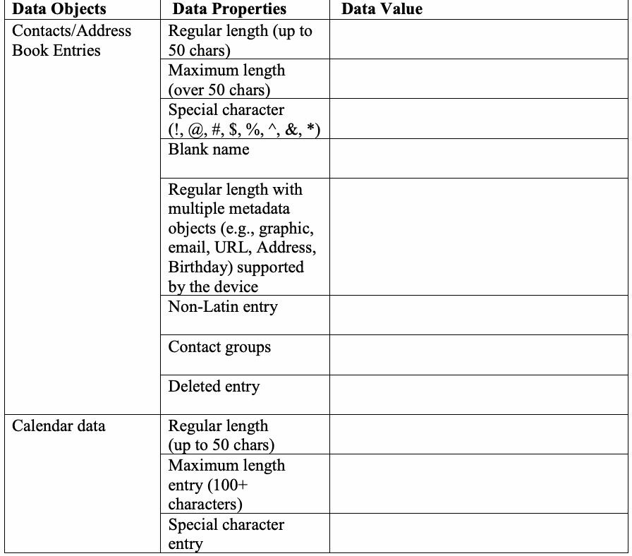
| データオブジェクト | データプロパティ | データ値 |
| 連絡先/アドレス帳のエントリ | 標準の長さ（最大50文字） | |
| 最大長（50文字超） | ||
| 特殊文字（!, @, #, $, %, ^, &, *） | ||
| 空の名前 | ||
| デバイスでサポートされる複数のメタデータオブジェクト（グラフィック、メール、URL、住所、誕生日など）を含む標準の長さ | ||
| 非ラテン文字エントリ | ||
| 連絡先グループ | ||
| 削除されたエントリ | ||
| カレンダーデータ | 標準の長さ（最大50文字） | |
| 最大長エントリ（100文字以上） | ||
| 特殊文字エントリ | ||
| 空のタイトルエントリ | ||
| 削除されたエントリ | ||
| メモデータ | 標準の長さのエントリ（100文字以下） | |
| 最大長エントリ（1000文字以上） | ||
| 削除されたエントリ（100～1000文字） |
Table 3: Stand-alone data files
表3：スタンドアロンデータファイル
| Data Objects | Data Properties | Data description/contents |
| Stand-alone files | Audio | mp3 |
| wav | ||
| ogg | ||
| wma | ||
| Graphic | bmp | |
| gif | ||
| jpg | ||
| png | ||
| Video | avi | |
| flv | ||
| mov | ||
| mp4 | ||
| Documents | txt | |
| doc | ||
| ppt | ||
| Audio – Deleted | ||
| Graphic – Deleted | ||
| Video – Deleted | ||
| Documents – Deleted |
原本PDFの抜粋画像
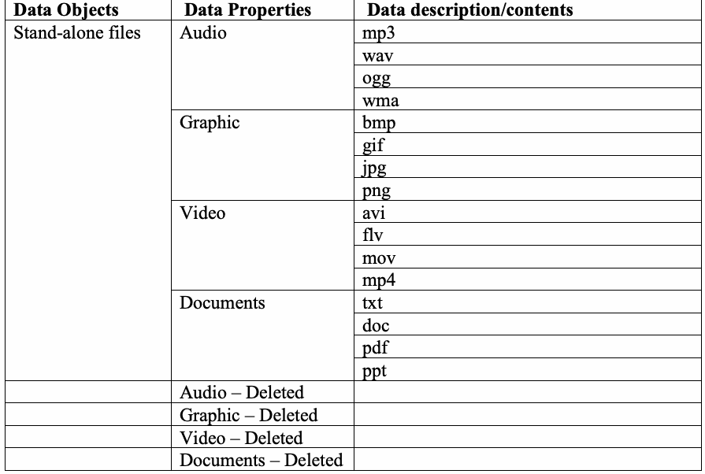
| データオブジェクト | データプロパティ | データの説明／内容 |
| スタンドアロンファイル | オーディオ | mp3 |
| wav | ||
| ogg | ||
| wma | ||
| グラフィック | bmp | |
| gif | ||
| jpg | ||
| png | ||
| 動画 | avi | |
| flv | ||
| mov | ||
| mp4 | ||
| ドキュメント | txt | |
| doc | ||
| ppt | ||
| オーディオ – 削除済み | ||
| グラフィック – 削除済み | ||
| 動画 – 削除済み | ||
| ドキュメント – 削除済み |
Table 4: Call Log data
表4：通話履歴データ
| Data Objects | Data Properties | Data Value/Date/Time/Duration |
| Call Logs | Incoming Calls | |
| Outgoing Calls | ||
| Missed Calls | ||
| Incoming – Deleted | ||
| Outgoing – Deleted | ||
| Missed – Deleted |
原本PDFの抜粋画像
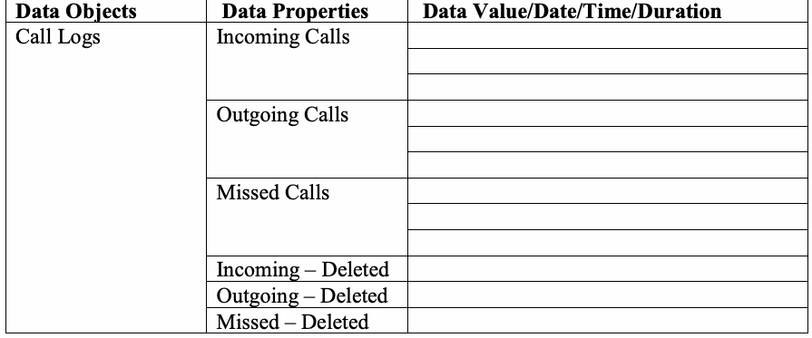
| データオブジェクト | データプロパティ | データ値／日付／時刻／通話時間 |
| 通話履歴 | 着信通話 | |
| 発信通話 | ||
| 不在着信 | ||
| 着信 – 削除済み | ||
| 発信 – 削除済み | ||
| 不在着信 – 削除済み |
Table 5: Text Messages
表5：テキストメッセージ
| Data Objects | Data Properties | Data Value/Sender/Receiver phone number/Date/Time |
| SMS/EMS Messages | Incoming SMS/Read | |
| Incoming SMS/Unread | ||
| Incoming SMS/Deleted | ||
| Incoming EMS/Read (160 characters +) | ||
| Incoming EMS/Unread (160 characters +) | ||
| Incoming EMS/Deleted (160 characters +) | ||
| Outgoing SMS | ||
| Outgoing group SMS | ||
| Outgoing SMS/Deleted | ||
| Outgoing EMS (160 characters +) | ||
| Outgoing group EMS (160 characters +) | ||
| Outgoing EMS/Deleted (160 characters +) |
原本PDFの抜粋画像
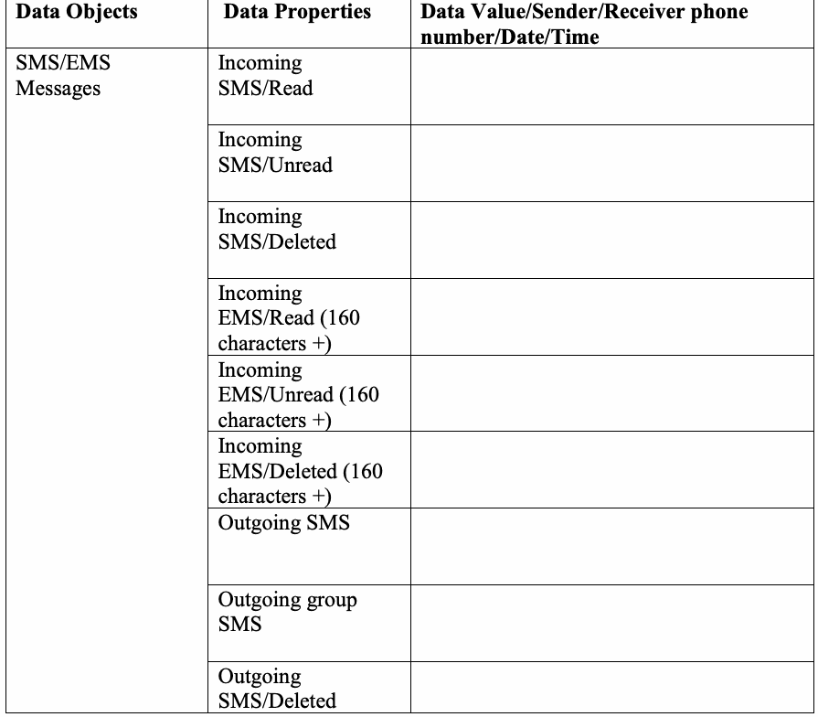
| データオブジェクト | データプロパティ | データ値／送信者・受信者の電話番号／日付／時刻 |
| SMS/EMSメッセージ | 受信SMS／既読 | |
| 受信SMS／未読 | ||
| 受信SMS／削除済み | ||
| 受信EMS／既読（160文字以上） | ||
| 受信EMS／未読（160文字以上） | ||
| 受信EMS／削除済み（160文字以上） | ||
| 送信SMS | ||
| 送信グループSMS | ||
| 送信SMS／削除済み | ||
| 送信EMS（160文字以上） | ||
| 送信グループEMS（160文字以上） | ||
| 送信EMS／削除済み（160文字以上） |
Table 6: Multi-media Messages
表6：マルチメディアメッセージ
| Data Objects | Data Properties | Data Value/Sender/Receiver phone number/Date/Time |
| MMS Messages | Incoming audio MMS | |
| Incoming graphic MMS | ||
| Incoming video MMS | ||
| Outgoing audio MMS | ||
| Outgoing graphic MMS | ||
| Outgoing video MMS |
原本PDFの抜粋画像
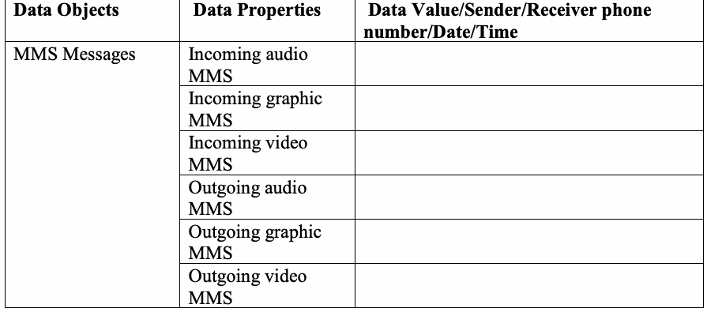
| データオブジェクト | データプロパティ | データ値／送信者・受信者の電話番号／日付／時刻 |
| MMSメッセージ | 受信音声MMS | |
| 受信画像MMS | ||
| 受信動画MMS | ||
| 送信音声MMS | ||
| 送信画像MMS | ||
| 送信動画MMS |
Table 7: Location data
表 7: 位置データ
| Data Objects | Data Properties | Data Value |
| Navigation (Device Specific) | Waypoints (longitude/latitude) | |
| Checking In (places of interest) | ||
| Pictures/Video (geotagged) | ||
| Trip (destination) |
原本PDFの抜粋画像
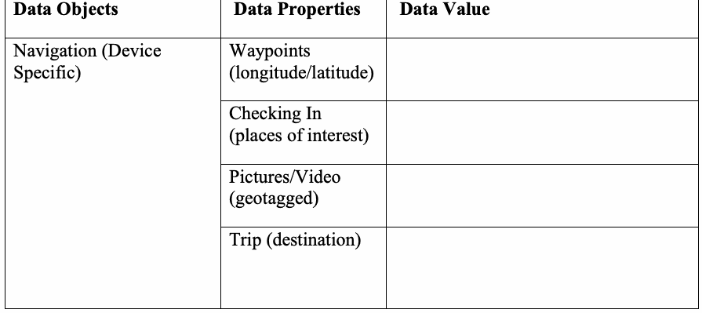
| データオブジェクト | データプロパティ | データ値 |
| ナビゲーション（デバイス固有） | ウェイポイント（経度/緯度） | |
| チェックイン（関心地点） | ||
| 写真/動画（ジオタグ付き） | ||
| トリップ（目的地） |
Table 8: Browser/email data
表 8: ブラウザ/メールデータ
| Data Objects | Data Properties | Data Value |
| Bookmarks/History/Email | Visited Sites: | |
| Bookmarked Sites: | ||
| Email data: |
原本PDFの抜粋画像
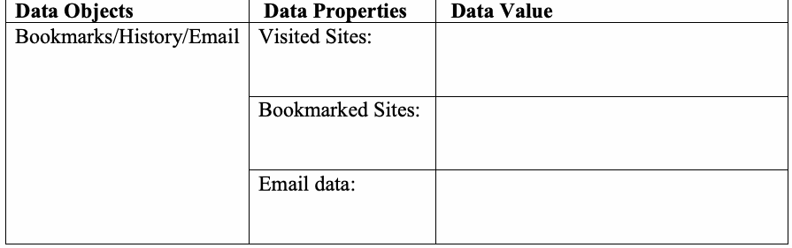
| データオブジェクト | データプロパティ | データ値 |
| ブックマーク/履歴/メール | 閲覧したサイト: | |
| ブックマークされたサイト: | ||
| メールデータ: |
Table 9: Social Media related data
表 9: ソーシャルメディア関連データ
| Data Objects | Data Properties | Data Value |
| Profile information, Status updates, personal messages, etc. | Application 1, e.g., Facebook/Facebook messenger | |
| Application 2, e.g., Twitter | ||
| Application 3, e.g., LinkedIn | ||
| Application 4, e.g., Instagram |
原本PDFの抜粋画像
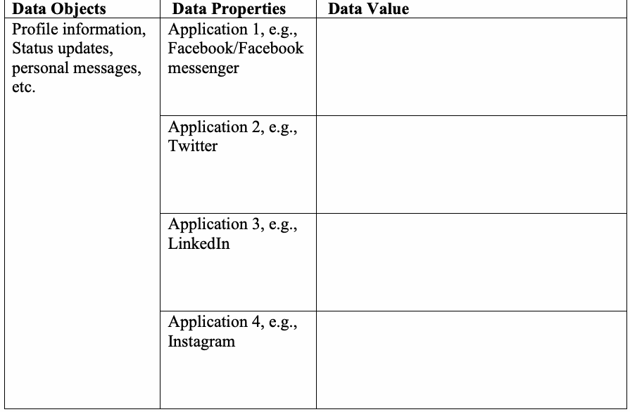
| データオブジェクト | データプロパティ | データ値 |
| プロフィール情報、ステータス更新、個人メッセージなど | アプリケーション1（例: Facebook/Facebook messenger） | |
| アプリケーション2（例: Twitter） | ||
| アプリケーション3（例: LinkedIn） | ||
| アプリケーション4（例: Instagram） |
Table 10: Other applications of interest
表 10: その他の関心のあるアプリケーション
| Data Objects | Data Properties | Data Value |
| Application related data | Application 1 (e.g., reminders) | |
| Application 2 (e.g., Productivity) | ||
| Application 3 (e.g., Organization) |
原本PDFの抜粋画像
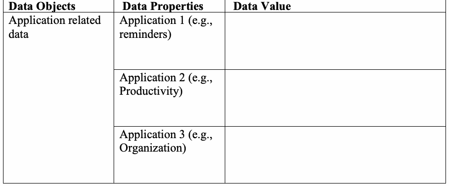
| データオブジェクト | データプロパティ | データ値 |
| アプリケーション関連データ | アプリケーション1（例：リマインダー） | |
| アプリケーション2（例：生産性） | ||
| アプリケーション3（例：整理・管理） |
Note: Populating data onto SIM/UICCs is dependent upon the make and model of mobile device. Table 11: SIM/UICC data
注：SIM/UICCへのデータ格納は、モバイルデバイスのメーカーおよびモデルに依存する。表11：SIM/UICCデータ
| Data Element | Data Value | |
| ICCID | ||
| Service Provider Name (SPN) | ||
| IMSI | ||
| Abbreviated Dialing Numbers (ADNs) | Maximum Length | |
| Special Character | ||
| Blank Name | ||
| Non-ASCII Entry | ||
| Regular Length | ||
| Last Numbers Dialed (LNDs) | ||
| Incoming SMS Messages | Read | |
| Unread | ||
| Non-ASCII | ||
| Deleted | ||
| Incoming EMS Messages (over 160 chars) | Read | |
| Unread | ||
| Non-ASCII | ||
| Deleted | ||
| LOCI | ||
| GPRSLOCI | ||
原本PDFの抜粋画像
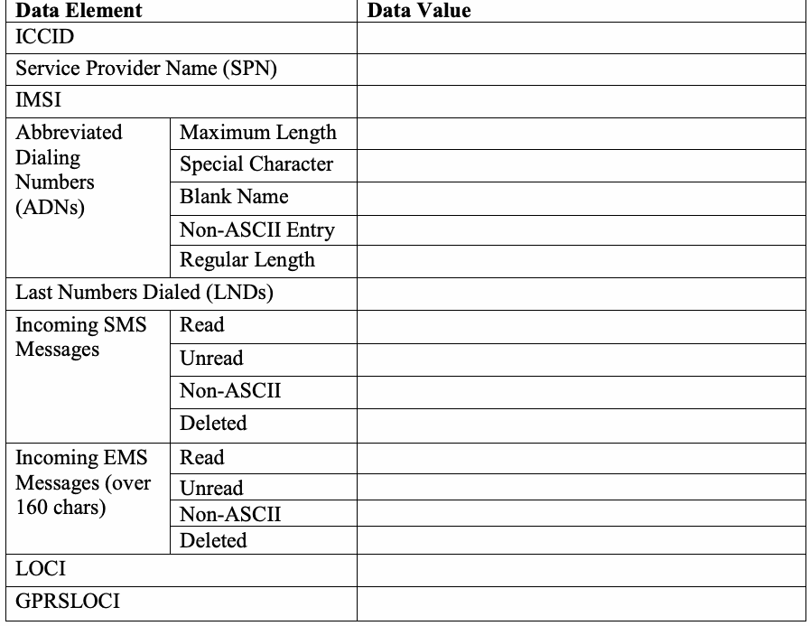
| データ要素 | データ値 | |
| ICCID | ||
| サービスプロバイダー名（SPN） | ||
| IMSI | ||
| 短縮ダイヤル番号（ADN） | 最大長 | |
| 特殊文字 | ||
| 空白名 | ||
| 非ASCIIエントリ | ||
| 標準長 | ||
| 最終発信番号（LND） | ||
| 受信SMSメッセージ | 既読 | |
| 未読 | ||
| 非ASCII | ||
| 削除済み | ||
| 受信EMSメッセージ（160文字超） | 既読 | |
| 未読 | ||
| 非ASCII | ||
| 削除済み | ||
| LOCI | ||
| GPRSLOCI | ||
Appendix C—Mobile Device Data Example
付録C—モバイルデバイスデータの例
Appendix C – contains an example/template of a dataset used for populating the internal memory and associated media i.e., SIM/UICC of a test device.
付録C – テストデバイスの内部メモリおよび関連メディア（すなわちSIM/UICC）への格納に使用されるデータセットの例/テンプレートを含む。
Table 12: PIM data example
表12：PIMデータの例
| Data Objects | Data Properties | Data Value |
| Contacts/Address Book Entries | Regular length (up to 50 chars) | Eddie Van Halen, 5150515051 |
| Maximum length (over 50 chars) | John Jacob Jingle Heimer Schmidt That’s My Name Too Whenever I Go Out The People Always Shout John Jacob Jingle Heimer Schmidt, 8988675309 | |
| Special character (!, @, #, $, %, ^, &, *) | *, 8887771212 | |
| Blank name | 8785551111 | |
| Regular length with multiple metadata objects (e.g., graphic, email, URL, Address, Birthdate) supported by the device. | Stevie Ray Vaughn, 1234567890, work: stevie@srv.com, address: 1234 Main Street, Dallas, TX, SRV Birthday: October 3, 1954 | |
| Non-Latin entry | 阿恶哈拉, +86 35 8 763 30 07 Aurélien, +33 22 6 555 20 20 | |
| Contact groups | 27 Club: Jimi Hendrix*, Stevie Ray Vaughn*, John Bonham | |
| Deleted entry | John Bonham, 9878767654 | |
| Calendar data | Regular length (up to 50 characters) | Date/Time: Location: Los Angeles Type: Meeting Title: Rush Concert |
| Maximum length entry (100+ characters) | Date/Time: Type: Reminder Title: Van Halen were scheduled to perform forty shows on their 2007 tour with David Lee Roth after much success in the early 80s with David Lee Roth as their front man for Van Halen!! | |
| Special character entry | Date/Time: e.g.,!, @, #, $, %, ^, &, * | |
| Blank title entry | Date/Time: Type: Reminder | |
| Deleted entry | Date/Time: Hendrix Summer of Love Documentary | |
| Memo data | Regular length entry | (100 characters or less) |
| Long entry | (1000 characters +) | |
| Deleted entry | (100 – 1000 characters) |
原本PDFの抜粋画像
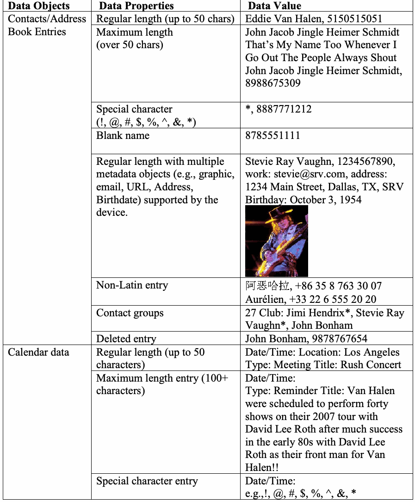
| データオブジェクト | データプロパティ | データ値 |
| 連絡先/アドレス帳エントリ | 標準長（最大50文字） | Eddie Van Halen, 5150515051 |
| 最大長（50文字超） | John Jacob Jingle Heimer Schmidt That’s My Name Too Whenever I Go Out The People Always Shout John Jacob Jingle Heimer Schmidt, 8988675309 | |
| 特殊文字（!, @, #, $, %, ^, &, *） | *, 8887771212 | |
| 名前なし | 8785551111 | |
| デバイスがサポートする複数のメタデータオブジェクト（例：画像、メール、URL、住所、生年月日）を含む標準長。 | Stevie Ray Vaughn, 1234567890, work: stevie@srv.com, address: 1234 Main Street, Dallas, TX, SRV Birthday: October 3, 1954 | |
| 非ラテン文字エントリ | 阿恶哈拉, +86 35 8 763 30 07 Aurélien, +33 22 6 555 20 20 | |
| 連絡先グループ | 27 Club: Jimi Hendrix*, Stevie Ray Vaughn*, John Bonham | |
| 削除済みエントリ | John Bonham, 9878767654 | |
| カレンダーデータ | 標準長（最大50文字） | Date/Time: Location: Los Angeles Type: Meeting Title: Rush Concert |
| 最大長エントリ（100文字以上） | Date/Time: Type: Reminder Title: Van Halen were scheduled to perform forty shows on their 2007 tour with David Lee Roth after much success in the early 80s with David Lee Roth as their front man for Van Halen!! | |
| 特殊文字エントリ | Date/Time: e.g.,!, @, #, $, %, ^, &, * | |
| タイトルなしエントリ | Date/Time: Type: Reminder | |
| 削除済みエントリ | Date/Time: Hendrix Summer of Love Documentary | |
| メモデータ | 標準長エントリ | （100文字以下） |
| 長いエントリ | （1000文字以上） | |
| 削除済みエントリ | （100～1000文字） |
Table 13: Stand-alone data files example
表 13: スタンドアロンデータファイルの例
| Data Objects | Data Properties | Data Value |
| Stand-alone files | Audio | Supported audio files (e.g., mp3, wav, ogg, wma) |
| Graphic | Supported graphic files (e.g., bmp, gif, jpg, png) | |
| Video | Supported video files (e.g., avi, flv, mov, mp4) | |
| Documents | Supported document files (e.g., txt, doc, pdf, ppt) | |
| Audio – Deleted | Deleted audio file | |
| Graphic – Deleted | Deleted graphic file | |
| Video – Deleted | Deleted video file | |
| Documents – Deleted | Deleted document file |
原本PDFの抜粋画像
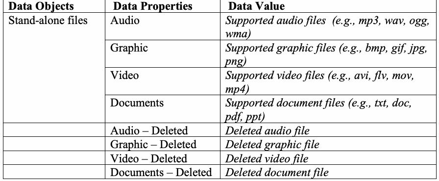
| データオブジェクト | データプロパティ | データ値 |
| スタンドアロンファイル | 音声 | サポートされている音声ファイル（例: mp3、wav、ogg、wma） |
| 画像 | サポートされている画像ファイル（例: bmp、gif、jpg、png） | |
| 動画 | サポートされている動画ファイル（例: avi、flv、mov、mp4） | |
| ドキュメント | サポートされているドキュメントファイル（例: txt、doc、pdf、ppt） | |
| 音声 – 削除済み | 削除された音声ファイル | |
| 画像 – 削除済み | 削除された画像ファイル | |
| 動画 – 削除済み | 削除された動画ファイル | |
| ドキュメント – 削除済み | 削除されたドキュメントファイル |
Table 14: Call Log data example
表 14: 通話履歴データの例
| Data Objects | Data Properties | Data Value/Date/Time/Duration |
| Call Logs | Incoming Calls | (301) 555-0101 / April 12, 2017 2:07pm / 10 minutes |
| (703) 555-0102 / April 12, 2017 2:20pm / Canceled call | ||
| (103) 555-0103 / April 12, 2017 2:21pm / 2 seconds | ||
| Outgoing Calls | (xxx) xxx-xxxx / April 12, 2017 2:25pm / 3 seconds | |
| (xxx) xxx-xxxx / April 12, 2017 2:26pm / 2 minutes, 3 seconds | ||
| (xxx) xxx-xxxx / April 12, 2017 2:30pm / 10 seconds | ||
| Missed Calls | (xxx) xxx-xxxx / April 12, 2017 3:01pm | |
| (xxx) xxx-xxxx / April 12, 2017 3:03pm | ||
| (xxx) xxx-xxxx / April 12, 2017 3:07pm | ||
| Incoming – Deleted | (103) 555-0103 / April 12, 2017 3:09pm / 2 seconds | |
| Outgoing – Deleted | (xxx) xxx-xxxx / April 12, 2017 3:10pm / 3 seconds | |
| Missed - Deleted | (xxx) xxx-xxxx / April 12, 2017 3:15pm |
原本PDFの抜粋画像
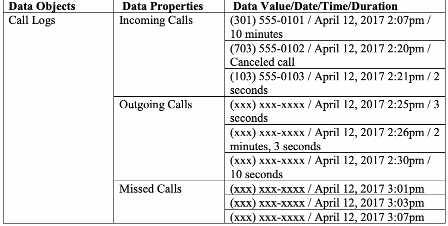
| データオブジェクト | データプロパティ | データ値/日付/時刻/通話時間 |
| 通話履歴 | 着信通話 | (301) 555-0101 / 2017年4月12日 2:07pm / 10分 |
| (703) 555-0102 / 2017年4月12日 2:20pm / キャンセルされた通話 | ||
| (103) 555-0103 / 2017年4月12日 2:21pm / 2秒 | ||
| 発信通話 | (xxx) xxx-xxxx / 2017年4月12日 2:25pm / 3秒 | |
| (xxx) xxx-xxxx / 2017年4月12日 2:26pm / 2分3秒 | ||
| (xxx) xxx-xxxx / 2017年4月12日 2:30pm / 10秒 | ||
| 不在着信 | (xxx) xxx-xxxx / 2017年4月12日 3:01pm | |
| (xxx) xxx-xxxx / 2017年4月12日 3:03pm | ||
| (xxx) xxx-xxxx / 2017年4月12日 3:07pm | ||
| 着信 – 削除済み | (103) 555-0103 / 2017年4月12日 3:09pm / 2秒 | |
| 発信 – 削除済み | (xxx) xxx-xxxx / 2017年4月12日 3:10pm / 3秒 | |
| 不在着信 - 削除済み | (xxx) xxx-xxxx / 2017年4月12日 3:15pm |
Table 15: Text Messages example
表 15: テキストメッセージの例
| Data Objects | Data Properties | Data Value/Sender/Receiver phone number/Date/Time |
| SMS/EMS Messages | Incoming SMS/Read | The following SMS message is a read incoming message sent from another device / (301) 555-0102 / April 12, 2017 3:15pm |
| Incoming SMS/Unread | The following SMS message is an unread message sent from another device / (301) 555-0102 / April 12, 2017 3:16pm | |
| Incoming SMS/Deleted | This is a deleted incoming message sent from another device / (301) 555-0102 / April 12, 2017 3:17pm | |
| Incoming EMS/Read | Incoming read active extended SMS message. This is an incoming SMS message that exceeds 160 characters. This message will determine if the forensic application properly reports all characters contained in the message. / (301) 555-0102 / April 12, 2017 3:17pm | |
| Incoming EMS/Unread | Incoming unread active extended SMS message. This is an incoming SMS message that exceeds 160 characters. This message will determine if the forensic application properly reports all characters contained in the message. (301) 555-0102 / April 12, 2017 3:18pm | |
| Incoming EMS/Deleted | Incoming deleted extended SMS message. This is a deleted incoming SMS message sent from another device to determine if the forensic application has the ability to acquire and report deleted incoming SMS messages. / (301) 555-0102 / April 12, 2017 3:20pm | |
| Outgoing SMS | The following SMS message is an active outgoing message sent to another device / (301) 555-0101 / April 12, 2017 3:20pm | |
| Outgoing group SMS | The following SMS message is an active outgoing group message sent to multiple recipients / (301) 555-0101 and (301) 555-0102 / April 12, 2017 3:21pm | |
| Outgoing SMS/Deleted | This is a deleted outgoing message sent to another device / (301) 555-0101 / April 12, 2017 3:21pm | |
| Outgoing EMS | Outgoing active extended SMS message. This is an outgoing SMS message that exceeds 160 characters. This message will determine if the forensic application properly reports all characters contained in the message. / (301) 555-0101 / April 12, 2017 3:22pm | |
| Outgoing group EMS | Outgoing active extended SMS message. This is an outgoing SMS message sent to multiple recipients that exceeds 160 characters. This message will determine if the forensic application properly reports all characters contained in the message. / (301) 555-0101 and (301) 555-0102 / April 12, 2017 3:23pm | |
| Outgoing EMS/ Deleted | Outgoing deleted extended SMS message. This is a deleted outgoing SMS message sent to another device to determine if the forensic application has the ability to acquire and report deleted outgoing SMS messages. / (301) 555-0101 / April 12, 2017 3:25pm |
原本PDFの抜粋画像
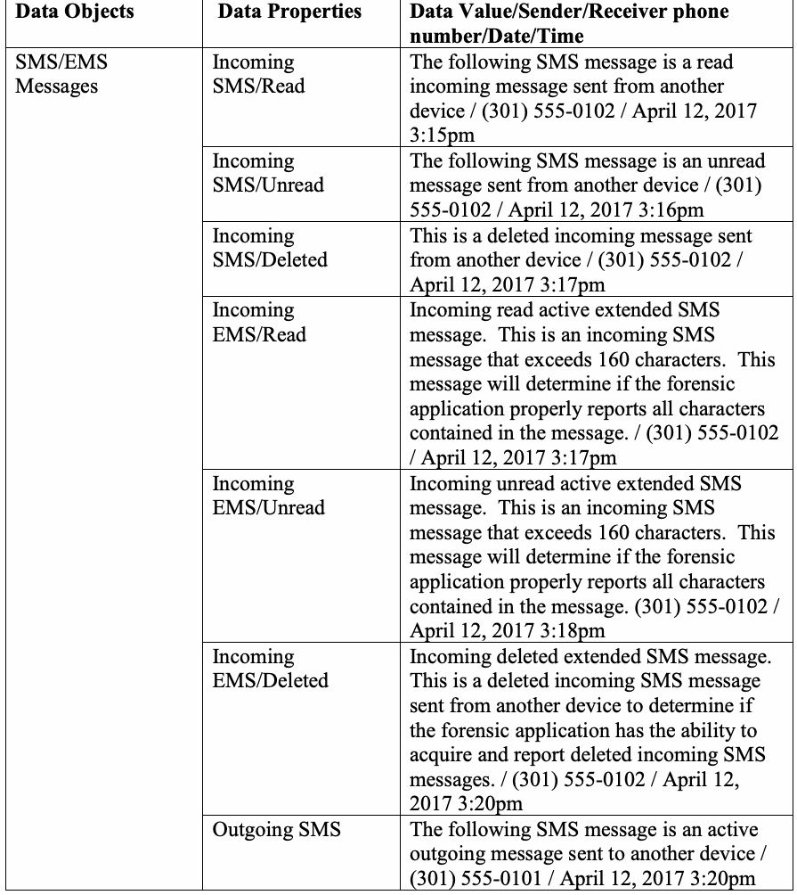
| データオブジェクト | データプロパティ | データ値/送信者/受信者の電話番号/日付/時刻 |
| SMS/EMSメッセージ | 着信SMS/既読 | 以下のSMSメッセージは、別のデバイスから送信された既読の着信メッセージです / (301) 555-0102 / 2017年4月12日 3:15pm |
| 着信SMS/未読 | 以下のSMSメッセージは、別のデバイスから送信された未読メッセージです / (301) 555-0102 / 2017年4月12日 3:16pm | |
| 着信SMS/削除済み | これは別のデバイスから送信された削除済みの着信メッセージです / (301) 555-0102 / 2017年4月12日 3:17pm | |
| 着信EMS/既読 | 着信既読のアクティブな拡張SMSメッセージ。これは160文字を超える着信SMSメッセージです。このメッセージは、フォレンジックアプリケーションがメッセージに含まれるすべての文字を適切に報告するかどうかを判定します。 / (301) 555-0102 / 2017年4月12日 3:17pm | |
| 着信EMS/未読 | 着信未読のアクティブな拡張SMSメッセージ。これは160文字を超える着信SMSメッセージです。このメッセージは、フォレンジックアプリケーションがメッセージに含まれるすべての文字を適切に報告するかどうかを判定します。(301) 555-0102 / 2017年4月12日 3:18pm | |
| 着信EMS/削除済み | 着信削除済みの拡張SMSメッセージ。これは、フォレンジックアプリケーションが削除された着信SMSメッセージを取得して報告する能力を有しているかどうかを判定するために、別のデバイスから送信された削除済みの着信SMSメッセージです。 / (301) 555-0102 / 2017年4月12日 3:20pm | |
| 送信SMS | 以下のSMSメッセージは、別のデバイスへ送信されたアクティブな送信メッセージです / (301) 555-0101 / 2017年4月12日 3:20pm | |
| 送信グループSMS | 以下のSMSメッセージは、複数の受信者に送信されたアクティブな送信グループメッセージです / (301) 555-0101 および (301) 555-0102 / 2017年4月12日 3:21pm | |
| 送信SMS/削除済み | これは別のデバイスに送信された削除済みの送信メッセージです / (301) 555-0101 / 2017年4月12日 3:21pm | |
| 送信EMS | 送信アクティブ拡張SMSメッセージ。これは160文字を超える送信SMSメッセージです。このメッセージは、フォレンジックアプリケーションがメッセージに含まれるすべての文字を適切に報告するかどうかを判定します。 / (301) 555-0101 / 2017年4月12日 3:22pm | |
| 送信グループEMS | 送信アクティブ拡張SMSメッセージ。これは複数の受信者に送信された、160文字を超える送信SMSメッセージです。このメッセージは、フォレンジックアプリケーションがメッセージに含まれるすべての文字を適切に報告するかどうかを判定します。 / (301) 555-0101 および (301) 555-0102 / 2017年4月12日 3:23pm | |
| 送信EMS/削除済み | 送信削除済み拡張SMSメッセージ。これは、フォレンジックアプリケーションが削除された送信SMSメッセージを取得して報告する能力を備えているかどうかを判定するために、別のデバイスに送信された削除済みの送信SMSメッセージです。 / (301) 555-0101 / 2017年4月12日 3:25pm |
Table 16: Multi-media Messages example
表 16：マルチメディアメッセージの例
| Data Objects | Data Properties | Data Value/Sender/Receiver phone number/Date/Time |
| MMS Messages | Incoming audio MMS | Incoming sound byte message attachment: audio file / (301) 555-0101 / April 12, 2017 4:00pm |
| Incoming graphic MMS | Incoming graphic message attachment: graphic file / (301) 555-0101 / April 12, 2017 4:01pm | |
| Incoming video MMS | Incoming video message attachment: video file / (301) 555-0101 / April 12, 2017 4:03pm | |
| Outgoing audio MMS | Outgoing sound byte message attachment: audio file / (301) 555-0101 / April 12, 2017 4:07pm | |
| Outgoing graphic MMS | Outgoing graphic message attachment: graphic file / (301) 555-0101 / April 12, 2017 4:09pm | |
| Outgoing video MMS | Outgoing video message attachment: video file / (301) 555-0101 / April 12, 2017 4:12pm |
原本PDFの抜粋画像
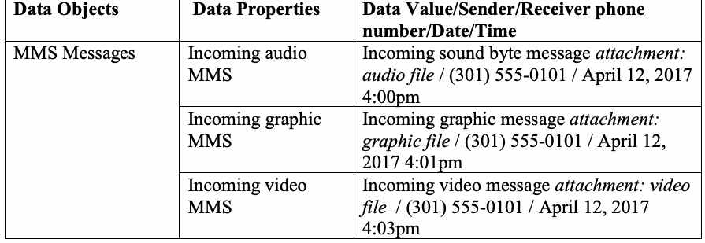
| データオブジェクト | データプロパティ | データ値／送信者／受信者の電話番号／日時 |
| MMSメッセージ | 受信音声MMS | 受信サウンドバイトメッセージ添付ファイル：音声ファイル / (301) 555-0101 / 2017年4月12日 4:00pm |
| 受信画像MMS | 受信画像メッセージ添付ファイル：画像ファイル / (301) 555-0101 / 2017年4月12日 4:01pm | |
| 受信動画MMS | 受信動画メッセージ添付ファイル：動画ファイル / (301) 555-0101 / 2017年4月12日 4:03pm | |
| 送信音声MMS | 送信サウンドバイトメッセージ添付ファイル：音声ファイル / (301) 555-0101 / 2017年4月12日 4:07pm | |
| 送信画像MMS | 送信画像メッセージ添付ファイル：画像ファイル / (301) 555-0101 / 2017年4月12日 4:09pm | |
| 送信動画MMS | 送信動画メッセージ添付ファイル：動画ファイル / (301) 555-0101 / 2017年4月12日 4:12pm |
Table 17: Location Data example
表 17：位置データの例
| Data Objects | Data Properties | Data Value |
| Navigation (Device Specific) | Waypoints | Longitude/Latitude coordinates |
| Checking In | Social media | |
| Pictures/Video | Geotagged | |
| Trip | Trip Advisor |
原本PDFの抜粋画像
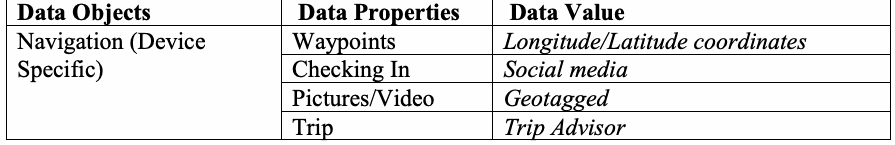
| データオブジェクト | データプロパティ | データ値 |
| ナビゲーション（デバイス固有） | ウェイポイント | 経度／緯度座標 |
| チェックイン | ソーシャルメディア | |
| 写真／動画 | ジオタグ付き | |
| 旅行 | トリップアドバイザー（Trip Advisor） |
Table 18: Browser/email data example
表 18：ブラウザ／電子メールデータの例
| Data Objects | Data Properties | Data Value |
| Bookmarks/History/Email | Visited Sites: | History of various sites navigated to |
| Bookmarked Sites: | Active and deleted entries | |
| Email data: | Cached data to the phone |
原本PDFの抜粋画像
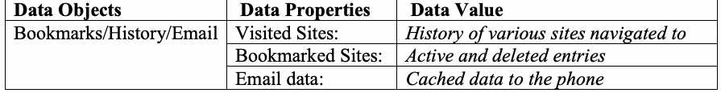
| データオブジェクト | データプロパティ | データ値 |
| ブックマーク／履歴／電子メール | アクセスしたサイト： | 閲覧したさまざまなサイトの履歴 |
| ブックマークしたサイト： | アクティブおよび削除済みのエントリ | |
| 電子メールデータ： | 電話にキャッシュされたデータ |
Table 19: Social Media related data example
表19：ソーシャルメディア関連データの例
| Data Objects | Data Properties | Data Value |
| Profile information, Status updates, personal messages, etc. | Facebook/Facebook messenger | Profile related data (picture, bio), Status updates, personal messages, etc. |
| Profile related data (picture, bio), Tweets, personal messages, etc. | ||
| Profile related data (picture, bio), personal messages, etc. | ||
| Profile related data (picture, bio), Posted pictures, videos, etc. |
原本PDFの抜粋画像
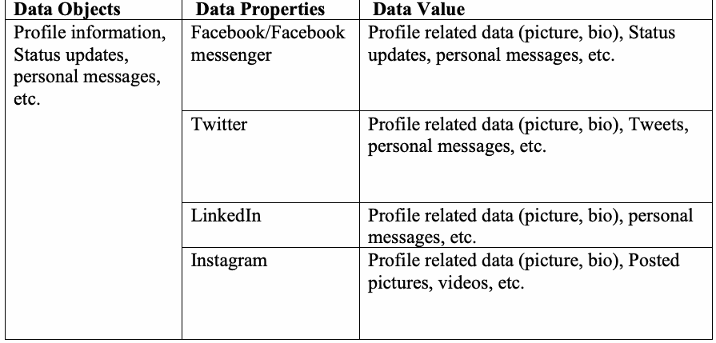
| データオブジェクト | データプロパティ | データ値 |
| プロフィール情報、ステータス更新、個人メッセージなど | Facebook/Facebook messenger | プロフィール関連データ（写真、略歴）、ステータス更新、個人メッセージなど |
| プロフィール関連データ（写真、略歴）、ツイート、個人メッセージなど | ||
| プロフィール関連データ（写真、略歴）、個人メッセージなど | ||
| プロフィール関連データ（写真、略歴）、投稿写真、動画など |
Table 20: Other applications of interest example
表20：その他の注目すべきアプリケーションの例
| Data Objects | Data Properties | Data Value |
| Application related data | Application 1 (e.g., reminders) | |
| Application 2 (e.g., Productivity) | ||
| Application 3 (e.g., Organization) |
原本PDFの抜粋画像
| データオブジェクト | データプロパティ | データ値 |
| アプリケーション関連データ | アプリケーション1（例：リマインダー） | |
| アプリケーション2（例：生産性） | ||
| アプリケーション3（例：整理・管理） |
Note: Populating data onto SIM/UICCs is dependent upon the make and model of mobile device. Table 21: SIM/UICC data example
注：SIM/UICCへのデータ格納は、モバイルデバイスのメーカーおよびモデルに依存する。表21：SIM/UICCデータの例
| Data Element | Data Value |
| ICCID | Documented from the SIM/UICC casing |
| Sevice Provider Name (SPN) | Documented from the phone provider |
| IMSI | Documented from the phone settings |
| Abbreviated Dialing Numbers (ADNs) | If supported by mobile device – export internal memory contacts to the SIM/UICC |
| Last Numbers Dialed (LNDs) | (301) 555-0101 (703) 555-0102 (103) 555-0103 (401) 555-0104 (205) 555-0105 (207) 555-0106 (280) 555-0107 (109) 555-0108 (404) 555-0109 (616) 555 -0110 |
| SMS Messages (active) | The following SMS message is an active SMS message. |
| SMS Message (deleted) | The following SMS message is a deleted SMS message. |
| EMS Messages (over 160 chars) | This is an extended SMS message. Extended SMS messages referred to as EMS messages are messages that dexceeds 160 characters. This message will determine if the forensic application properly reports all characters contained in the message. |
| Non-ASCII EMS Messages | икра 古老肉شیشلیک Döner kebab sauté |
| LOCI | Values are determined by location |
| GPRSLOCI | Values are determined by location |
原本PDFの抜粋画像
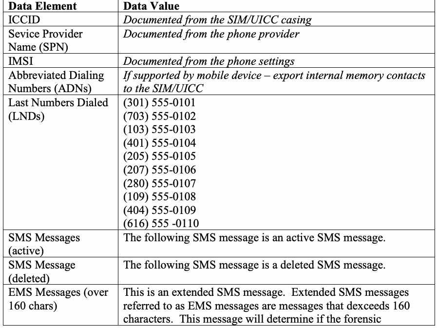
| データ要素 | データ値 |
| ICCID | SIM/UICCケーシングから記録 |
| サービスプロバイダ名（SPN） | 電話プロバイダから記録 |
| IMSI | 電話の設定から記録 |
| 短縮ダイヤル番号（ADN） | モバイルデバイスでサポートされている場合 – 内蔵メモリの連絡先をSIM/UICCにエクスポート |
| 最終発信番号（LND） | (301) 555-0101 (703) 555-0102 (103) 555-0103 (401) 555-0104 (205) 555-0105 (207) 555-0106 (280) 555-0107 (109) 555-0108 (404) 555-0109 (616) 555 -0110 |
| SMSメッセージ（アクティブ） | 以下のSMSメッセージはアクティブなSMSメッセージです。 |
| SMSメッセージ（削除済み） | 以下のSMSメッセージは削除されたSMSメッセージです。 |
| EMSメッセージ（160文字超） | これは拡張SMSメッセージです。EMSメッセージと呼ばれる拡張SMSメッセージは、160文字を超えるメッセージです。このメッセージは、フォレンジックアプリケーションがメッセージに含まれるすべての文字を適切に報告するかどうかを判定します。 |
| 非ASCII EMSメッセージ | икра 古老肉شیشلیک Döner kebab sauté |
| LOCI | 値は位置によって決定される |
| GPRSLOCI | 値は位置によって決定される |